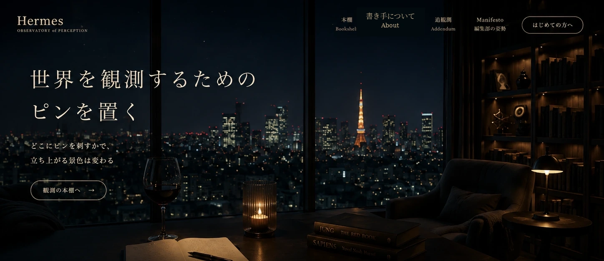

Hermes
OBSERVATORY OF PERCEPTION
本棚
Bookshelf
書き手について
About
はじめての方へ
観測の本棚へ
The Shelf
観測の本棚
Vol.00
はじまりの観測
Hermesとは
Vol.01
身体
感覚 状態 エネルギー
Vol.02
感情
気分 価値観 信念
Vol.03
思考
認知 判断 パターン
Vol.04
時間
過去 現在 未来
Vol.05
記憶
出来事 学び パターン
Vol.06
環境
人 場所 自然 気圧
Vol.07
対話 他者 AI
人 本 情報 関係性
Vol.08
価値 意味
信念 目的 生命の木
Vol.09
創造 表現
言葉 作品 物語
Vol.10
お金 物質
豊かさ 交換 現実
Editorial note
どこにピンを刺すかで
見える世界は変わる
×
From the shelf